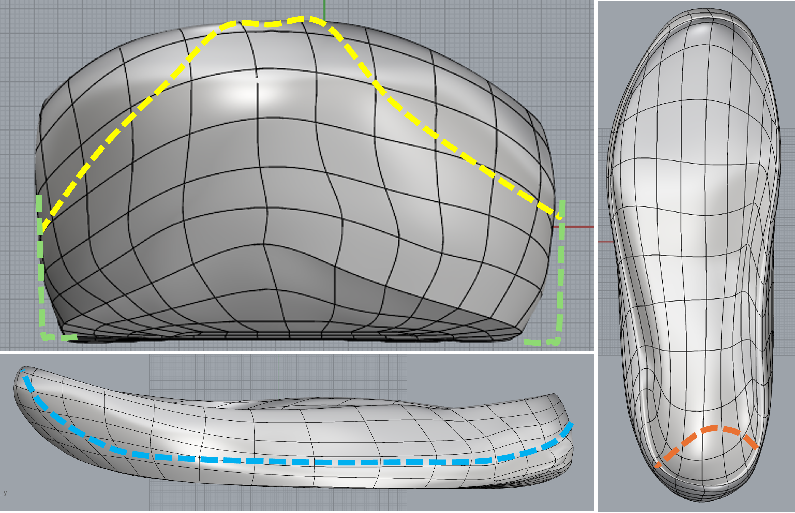

Current Project
Clinical Footwear Research & Development
In collaboration with biomedical engineers in the Donahue Research Lab, I am working on developing 3D printed walking shoes with a bio-inspired lattice structure. We have created a neutral control walking shoe and are working on optimizing a variable stiffness shoe for individuals with medial compartment knee osteoarthritis. In this project, I lead biomechanics data collections and analysis, and provide insights and design recommendations based off of biomechanical and perception data.